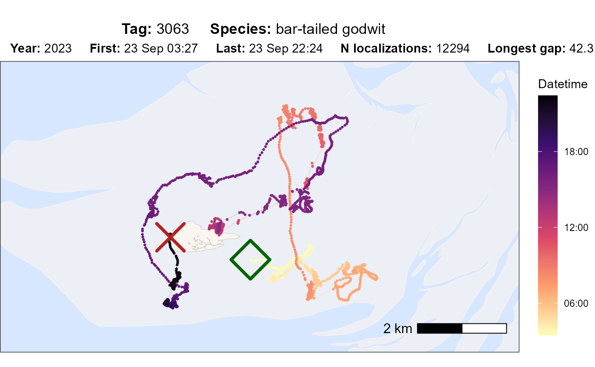
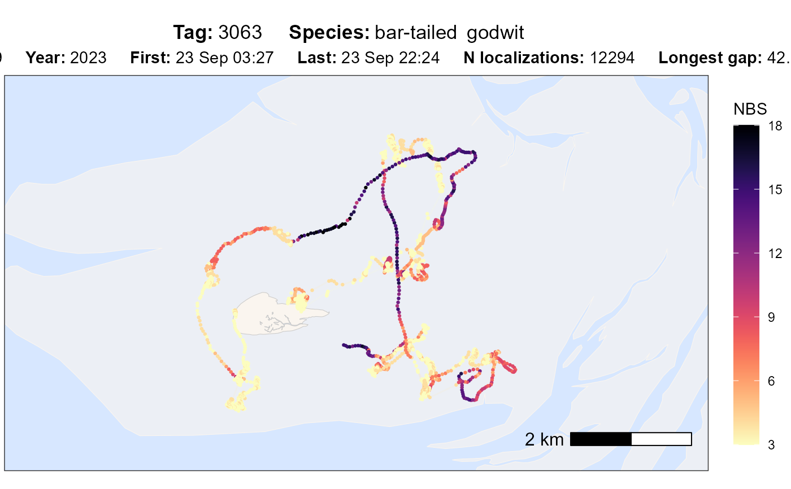
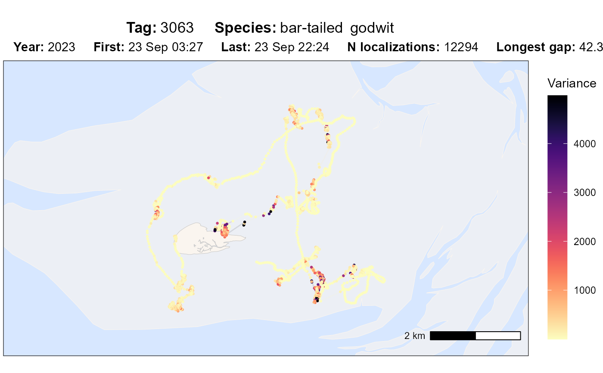
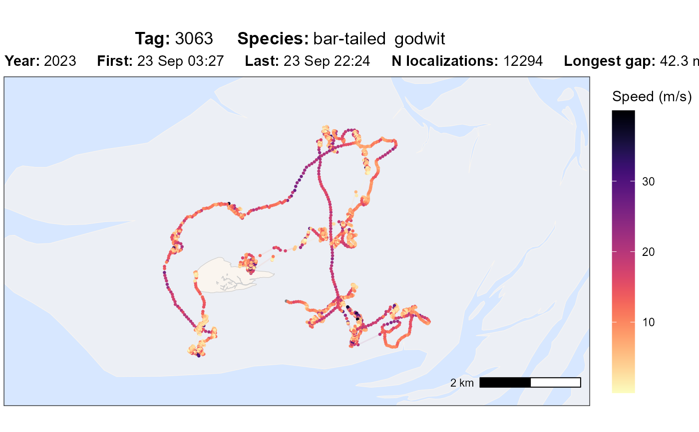
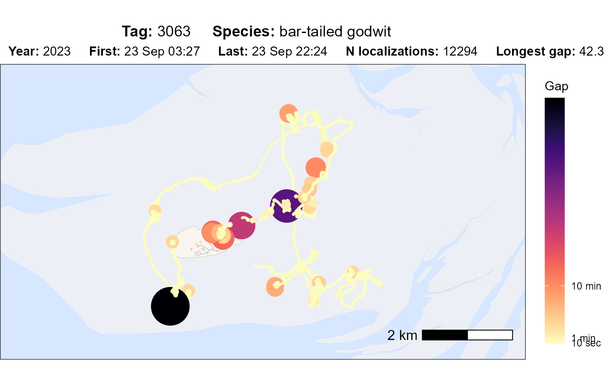

This function processes tracking data for a specific tag and generates a
visualization using ggplot2. It allows customization of colors, point
sizes, and track styles, and supports various display options such as
datetime, nbs (number of base stations / receivers), standard deviation,
speed_in and gap. The function can either return the plot or save it as an
png file.
Usage
atl_check_tag(
data,
buffer = 1000,
asp = "16:9",
option = "datetime",
viridis_option = "A",
viridis_direction = -1,
first_n = NULL,
last_n = NULL,
highlight_first = FALSE,
highlight_last = FALSE,
point_size = 0.5,
point_alpha = 1,
path_linewidth = 0.5,
path_alpha = 0.1,
element_text_size = 11,
filename = NULL,
png_width = 3840,
png_height = 2160
)Arguments
- data
A
data.tablecontaining tracking data. Must include the columns:"tag","x","y","time", and"datetime".- buffer
Numeric. The buffer size in meters around the data points in the plot (default: 1000).
- asp
Character. The aspect ratio of the plot (default:
"16:9").- option
Character. Determines the color mapping variable. Options are:
"datetime":"nbs":"sd":"speed_in":"gap":
- viridis_option
Character. The color scheme option from
viridis(default:"A"). See https://search.r-project.org/CRAN/refmans/viridisLite/html/viridis.html for all options (A-H).- viridis_direction
Numeric. Direction of the viridis color scale (-1 reverses, default: -1).
- first_n
Numeric (or NULL). If provided, only the first
nlocations are shown.- last_n
Numeric (or NULL). If provided, only the last
nlocations are shown.- highlight_first
Logical. If
TRUE, highlights the first point in the track (default:FALSE).- highlight_last
Logical. If
TRUE, highlights the last point in the track (default:FALSE).- point_size
Numeric. The size of the data points (default: 0.5).
- point_alpha
Numeric. Transparency of the data points (default: 1).
- path_linewidth
Numeric. The width of the connecting track lines (default: 0.5).
- path_alpha
Numeric. Transparency of the track lines (default: 0.1).
- element_text_size
Numeric. Adjust size of the text.
- filename
Character (or NULL). If provided, the plot is saved as a
.pngfile to this path and with this name; otherwise, the function returns the plot.- png_width
The width of the device.
- png_height
The height of the device.
Value
A ggplot2 object with the specified option and adjustments. If
filename is provided, the plot is saved as a .png file instead of
being returned.
Examples
# packages
library(tools4watlas)
# path to csv with filtered data
data_path <- system.file(
"extdata", "watlas_data_filtered.csv",
package = "tools4watlas"
)
# load data
data <- fread(data_path, yaml = TRUE)
# subset bar-tailed godwit
data <- data[species == "bar-tailed godwit"]
# plot different options
atl_check_tag(
data,
option = "datetime",
highlight_first = TRUE, highlight_last = TRUE
)

atl_check_tag(data, option = "nbs")

atl_check_tag(data, option = "sd")

atl_check_tag(data, option = "speed_in")

atl_check_tag(data, option = "gap")
